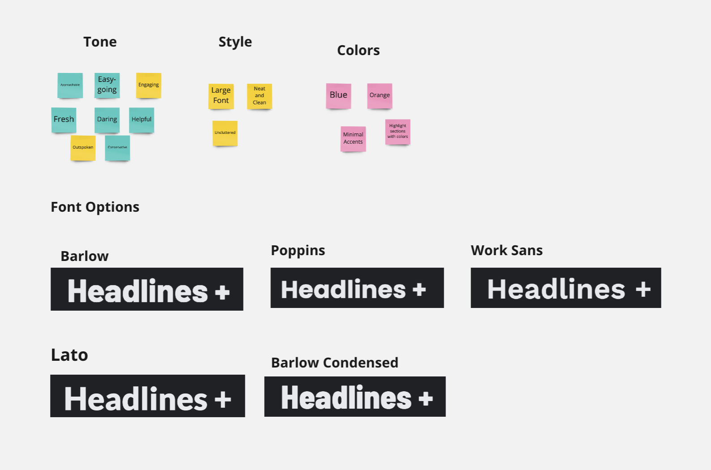
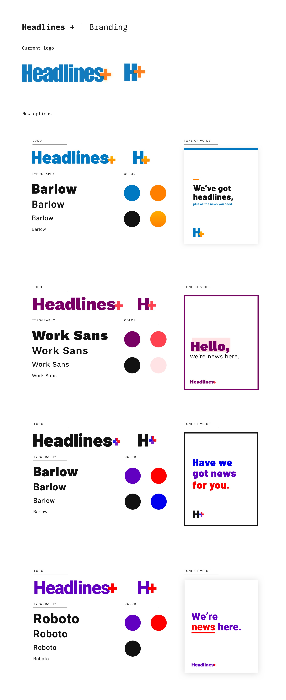
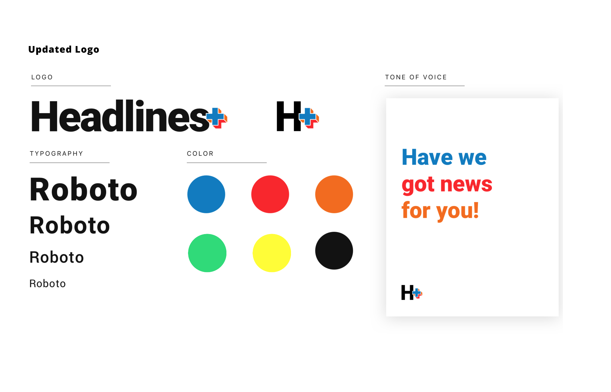
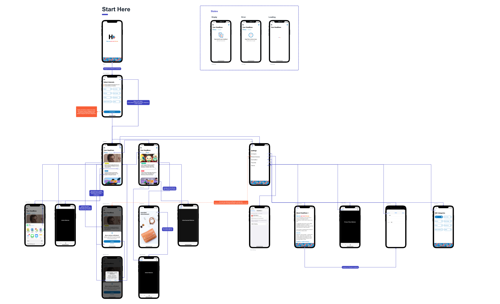
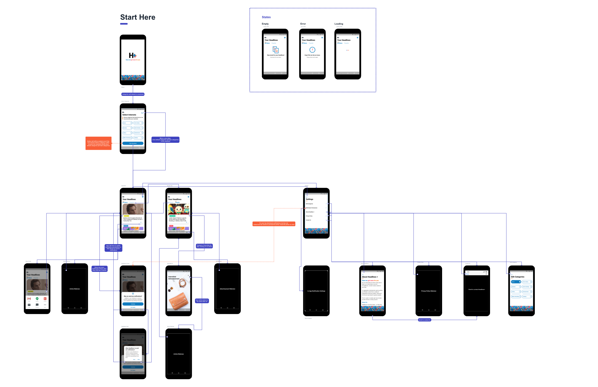
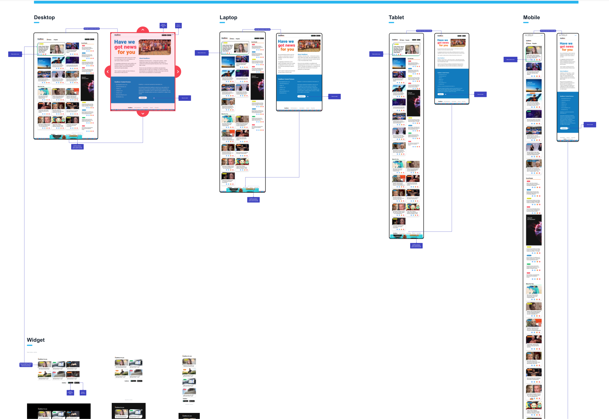

Headlines Plus is a suite of news aggregation mediums that provides a wide variety of content for users to select from, including, but not limited to, politics, sports, entertainment, geek culture, niche sports. They were looking to revitalize their brand and create a new suite of products.
My Role
Disovery & Research
Discovery Workshop & Industry, Competitors, and Audience Research.
Design
Branding, Mobile App, Website, and Widget designs.
Delivery
Visual QA, App previews & icons.
Discovery & Research
Led a Discovery Workshop to understand the vision, goals, and audience more. The Discovery was critical to providing direction for the project and prioritizing features. I designed activities for the workshop and facilitated sessions with the customer during this 3-day Discovery. I researched to understand the industry, competitors, and how to make them stand out from the crowd. I was able to leverage all the research we received in the Discovery to help pull together what I needed.
Branding Exploration
I created variations of the brand to see what direction the customer would like to take it in. Here's some of the examples I created.


This is the brand design the customer selected.

App Architecture
I mapped out the different products designed and identified how they tie together.
Visual Designs
I created the visual designs and then mapped out the flows for iOS, Android, and Web.



App Launch
We launched the app in March, which you can download the app on iOS and Android.